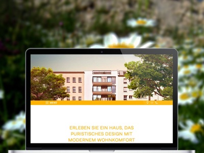
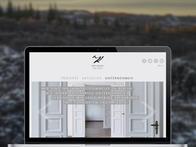

For example, we realized projects with parallax effects on Smartphones or implement image galleries with gesture control. As backend systems we use Wordpress, Drupal, ExpressionEngine, CodeIgniter, TaleShip or self custom systems based on PHP or Node.js.
Our development process includes minification of stylesheets and scripts, when dealing with high resolution images we use progressive loading techniques. We respect correct meta data, to achieve optimal results when sharing via Facebook, Twitter or Google+ and saving a link on the homescreens of iOS, Android and Windows Phone.
{% for cta in site.ctas %} {% if cta.lang == page.lang %} {% if cta.id == 'contact-responsive-website' %} {% include cta-plain.html %} {% endif %} {% endif %} {% endfor %} As we have a device lab with over 25 different mobile test devices – from Android smartphones with an operating system version of 2.3.6 and a screen size of 240 by 320 pixels via Windows Phones to MacBooks with Retina displays and 27-inch monitors – we can assure that your site is tested well before the release. Also our general terms provide client friendly corrections rounds for the perfectionists among you.
Wherever the compatibility is not limited, we use hardware acceleration of browsers and devices. The aim of our projects is a maximum availability and the quick loading time of a website. During our work on projects we continually improve our knowledge and process – a principle of practice we are loved for by our clients and which keeps us motivated to always give our best.
Examples for beautiful pages, that originated from the close collaboration with Razorfish and n3vision:
Audi TT car configurator with WebGL, Html5 canvas und CSS3 animations: microsites.audi.com/tt/
WebGL and HTML5 canvas animations for the Audi Q7: microsites.audi.com/q7mapofgreatness/
Parallax effects on mobile devices: lychener35.de
Wordpress with custom post types: kolarski.de
Responsive one page app: swin112.com
Mobile-first landingpage for a campaign: Corpus Sireo
Animated Website with responsive Lightbox and Slideshow effects: Jachimowicz Group